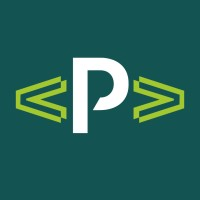
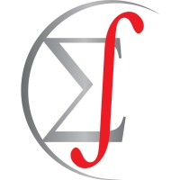

About me

My name is Vinícius Félix, and I am a seasoned statistician with technical and managerial experience, as well as a solid background in time-series analysis, geostatistics, and data visualization gained while pursuing a Bachelor of Statistics and a Master of Biostatistics.
While co-founder of H0 Consultoria, I’ve contributed to over 350 scientific studies and 40 business surveys, providing valuable insights to organizations. Following my hands-on technical phase, I advanced to management positions such as R&D, Data and Strategy Manager, Services Manager, and now Head of Data.
As I am passionate about bridging theory and real-world applications, my goal is to empower organizations to make data-driven decisions and optimize their operations using statistical insights.
Professional Experience
| Company | Period | Role |
|---|---|---|
| Datlo | 01/2024 - Present | Head of Data |
|  Ponta | 02/2023 - 12/2023 | Services Manager |
| GA + Intergado | 04/2022 - 01/2023 | Strategy Manager |
| 01/2021 - 03/2022 | R&D Manager | |
| 09/2020 - 12/2020 | Data Manager | |
| 10/2018 - 11/2019 | Statistics Professor | |
| 09/2016 - 08/2020 | Data Scientist Consultant and Co-founder | |
|  Estats Consultoria | 07/2013 - 12/2015 | Data Analyst and Co-founder |
Academic Experience
| University | Period | Degree | Final paper |
|---|---|---|---|
| 02/2017 - 02/2019 | Master of Science in Biostatistics | Spatio-temporal geostatistics: modelling of natural phenomena in spacetime | |
| 02/2013 - 12/2016 | Bachelor of Science in Statistics | Temporal, spatial, and spatio-temporal clustering processes and techniques |
More about me
[2024-Present] Head of Data
Datlo has a location intelligence platform for go-to-market and expansion teams. As Head of Data for a data-driven product, my responsibilities include technology integration, advanced analytics, data governance, obtaining a variety of datasets, cross-functional collaboration, customer consultation, regulatory compliance, and ongoing platform improvement.
I work with teams to extract relevant information using my geospatial analytics expertise, ensuring that customers make decisions that benefit their company operations. In general, I help firms flourish by providing a solid foundation for geographic data-driven decision-making.
[2023-2023] Services Manager
Following the merger of GA and Intergado, which was rebranded as Ponta, I was given charge of a new area of the company with the goal of expanding and exploring our technical team in order to provide value to our clients beyond our products.
I was in charge of overseeing the organization’s service delivery. My responsibilities included managing service teams, coordinating operations, and ensuring high-quality service delivery in order to meet the needs of customers and organizational goals, such as:
Hardware installation oversight: Managing the procurement, scheduling, and quality assurance of hardware installations.
Software implementation oversight: Selecting and deploying appropriate software solutions, providing user training, and managing licenses.
Consultancy: Deriving insights, identify trends, and help make informed decisions. Providing consultancy services based on data analysis to clients.
Technical support management: Establishing support procedures, handling inquiries and troubleshooting, and coordinating issue resolution with cross-functional teams.
My primary activities were:
Team leadership: Leading and managing a team of technicians, assigning tasks, evaluating performance, and fostering effective communication and collaboration.
Continuous improvement: Staying updated with technology trends, implementing process enhancements, gathering feedback, and promoting best practices and standardization.
Knowledge management: Systematic process of creating, organizing, and sharing knowledge to drive innovation and improve organizational performance to the whole team.
[2022-2023] Strategy Manager
In order to offer better actions through data science, GA merged with Intergado in 2022, a company that made hardware for accurately automating data collection, such as individual animal weight and provided software with the use of intelligence to make data-driven decisions easier.
As the company’s new strategy manager, my responsibilities were:
Managing the implementation of corporate strategy across all products;
Keeping track of project status and identifying risks;
Coordinating between technical and non-technical teams to align priorities and goals.
[2021-2022] R&D Manager
Later, in the end of 2020, I was given a promotion to lead the whole R&D division in 2021, and as such, I was also in charge of the software development team in addition to the data, my responsibilities were:
Implementing automation projects using robots (Jira Automation), web scraping data (Python/R), and improving data monitoring (Metabase) and data-driven decision-making (Dremio);
Applying agile methodologies and software development concepts in the execution of R&D projects (Jira Software) to drive continuous process improvement;
Managing the department’s budget and expenses while analyzing and reporting on key performance indicators and project outcomes to the board of directors;
Building project teams, developing schedules, and setting goals to meet overall needs.
[2020-2020] Data Manager
In 2020 I received an invitation to start and grow the data team within GA’s Research & Development (R&D) division in 2020, GA was a Brazilian animal science tech company, that I consulted for some years. My main tasks as Data Manager were:
Hiring data scientists and data engineers;
Establishing a project methodology;
Helping in the overall design of the data architecture;
Starting a data-driven culture within the company.
Also as I learned more about software development, I created my own R library for various functions to aid in data cleaning and visualization. The library is named relper, and it is available as an open source package to anyone who is interested.
[2016-2020] Data Science Consultant
In 2016, I co-founded the data consulting firm H0 Consultoria with a partner, where we collaborated on over 350 scientific studies and more than 40 business surveys for corporations. We were responsible for assisting others in making the most of statistics, such as doing:
Sampling design;
Data analysis;
Questionnaire review;
Statistics training.
[2018-2019] Statistics Professor
As I gained notoriety as a consultant, I was invited to teach statistics in the master of business administration (MBA) program for business intelligence at Unicesumar.
I updated the course topics by changing the material to a more modern and applied concept of statistics; despite the fact that it was only an introduction class, I used my hands-on experience to demonstrate real-world application of theoretical concepts.
[2017-2019] Post graduation
I decided to pursue a master’s degree in Biostatistics after graduating in the beginning of 2017. My dissertation was about spatio-temporal geostatistics models, that was a natural choice since I had developed projects on temporal and spatial statistics during graduation, so I decided to unite them.
Also, I assisted one of my advisers in the development of the geotoolsR R package, providing code to apply bootstrap techniques in the context of geostatistics.
Finally, for my optional credits, I chose psychometrics and epidemiology courses.
[2013-2016] Graduation
During my graduate studies I focused mainly on time-series, geostatistics, and data visualization. I received two scholarships for the Brazilian Program of Scientific Initiation (PBIC), which required students to conduct a research and present them in a congress after one year, and I completed both of them:
[2014] Topics on wavelet variance;
[2015] Wavelet multiple cross-correlation.
Besides that, I was also a member of the study group of spatial and temporal statistics, having worked with techniques to apply in time series and geostatistics, then I decided to do a final paper about clustering methods for temporal, spatio, and spatio-temporal data.
[2013-2015] Junior enterprise
Additionally, in 2013, I co-founded Estats Consultoria, a statistics junior enterprise, where I served as Marketing Director and, eventually, President for three years.
In the projects, I also worked as a data analyst, and later, as a senior in college, I assisted with freshman training in statistics.
In my last year, I opted to join the regional Junior Enterprises Nucleus (NEJ) to help establish a census in the region.